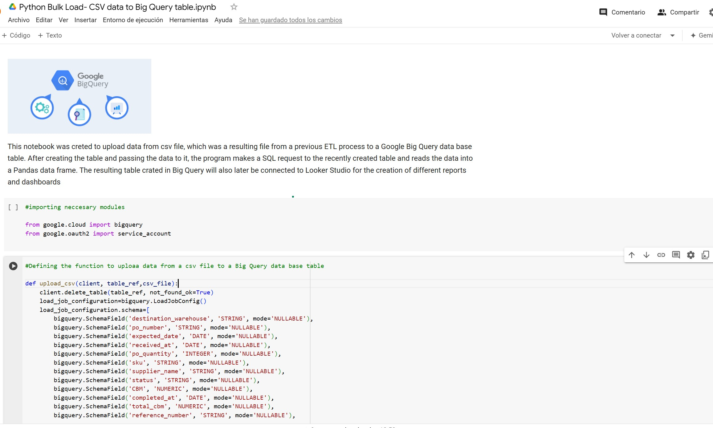

Uploading of ETL resulting CSV files into Google Big Query with Python
I led a project to migrate a customer's data from CSV, Excel files, and Google Sheets, which were at their operational limits, to Google BigQuery. I developed Python programs to transfer data from previous ETL processes to BigQuery tables, setting the stage for future integration with Looker Studio to create diverse reports and dashboards.
Problem Description
A customer had an ETL system implemented that stored resulting data in various CSV and Excel files, and Google Sheets. These systems were nearing their operational limits, particularly Google Sheets, which struggled with large data volumes and lacked robust security measures. To overcome these challenges, I led the migration of their data to Google BigQuery.
Problem Resolution
I created several Python programs to upload data from CSV files, which read the resulting files from previous ETL processes and deposit the data into different Google BigQuery tables. The newly created tables in BigQuery will later be connected to Looker Studio for the creation of various reports and dashboards. Below you will find a sample of the use of Python for uploading the data from one CSV file into a specific BigQuery table. After creating the table and transferring the data to it, the program executes a simple SQL query and passes the resulting data to a Pandas DataFrame.
Tools Involved
- Python
- Big Query
- Big Query Service Account